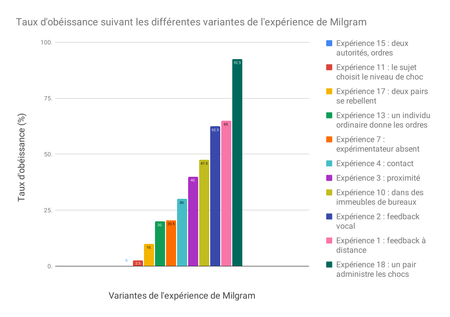

Previous slide Next slide Toggle fullscreen Open presenter view
Q2 – Nos choix sont-ils Cédric Eyssette (2021-2022)https://eyssette.github.io/
L'expérience de Milgram
Les variantes de l'expérience de Milgram 
L'argument
Les limites
vs.
I – L'argument Première partie
« Partie subordonnée d’un grand tout, l’homme est forcé d’en éprouver les influences. […] Les erreurs des philosophes sur la liberté de l’homme, viennent de ce qu’ils ont regardé sa volonté comme le premier mobile de ses actions, & que, faute de remonter plus haut, ils n’ont point vu les causes multipliées & compliquées indépendantes de lui qui mettent cette volonté elle-même en mouvement […]. Cependant il faut avouer que la multiplicité & la diversité des causes qui agissent sur nous souvent à notre insu, font qu’il nous est impossible, ou du moins très difficile, de remonter aux vrais principes de nos actions […]. Voilà ce qui rend l’étude de l’homme […] si difficile »
D'Holbach , Système de la nature , chap. XI
Quels sont les facteurs qui peuvent exercer
Des facteurs biologiques ?
= une question trop complexe, trop technique pour être traitée ici
Des facteurs psychiques ?
Des facteurs sociaux ?
A. L'influence inconsciente
1) L'hypothèse de
« Dans le cours des siècles, la science a infligé à l’égoïsme naïf de l’humanité deux graves démentis. La première fois, ce fut lorsqu’elle a montré que la terre, loin d’être le centre de l’univers, ne forme qu’une parcelle insignifiante du système cosmique dont nous pouvons à peine nous représenter la grandeur [...]. Le second démenti fut infligé à l’humanité par la recherche biologique, lorsqu’elle a réduit à rien les prétentions de l’homme à une place privilégiée dans l’ordre de la création, en établissant sa descendance du règne animal [...]. Un troisième démenti sera infligé à la mégalomanie humaine par la recherche psychologique de nos jours qui se propose de montrer au moi qu’il n’est seulement pas maître dans sa propre maison, qu’il en est réduit à se contenter de renseignements rares et fragmentaires sur ce qui se passe, en dehors de sa conscience, dans sa vie psychique. »
Freud , Introduction à la psychanalyse (1916), II, chap. 18
Pour Freud, les facteurs psychiques inconscients qui peuvent agir sur nous sont :
des pulsions refoulées ;
une structuration psychique de l'individu, qui s'est constituée pendant l'enfance.
Cette hypothèse est-elle correcte ?
2) L'hypothèse de
Définition
Un biais cognitif est une tendance à penser ou raisonner en fonction d'un schéma automatique.
L'effet de leurre (Decoy effect )
Le biais de statu quo
Définition Un nudge désigne une manière d'influencer les comportements qui ne fait appel ni à la violence (exercice direct de la force physique) ni à la contrainte (interdiction et menace de sanctions) mais repose sur la connaissance de la psychologie humaine .
B. L'influence inconsciente
Antoine Gallien, Baisemains et mocassins (2005)
Dans le film L'esquive , d'Abdelattif Kechiche, Un groupe d'adolescents d'une cité HLM répète, pour leur cours de français, un passage de la pièce Le Jeu de l'amour et du hasard de Marivaux.
« Ce n’est pas la conscience des hommes qui détermine leur existence, c’est au contraire leur existence sociale qui détermine leur conscience. »
Karl Marx , Contribution à la critique de l’économie politique , préface
II – Deuxième partie
A. La possibilité de la réflexion
« Pour établir la preuve de la liberté, considérons d’abord que certains êtres agissent sans aucun jugement, comme la pierre qui tombe vers le bas […] D’autres êtres agissent d’après un certain jugement, mais qui n’est pas libre. Ainsi les animaux telle la brebis qui, voyant le loup, juge qu’il faut le fuir […] par un instinct naturel. […] Mais l’homme agit d'après […] un rapprochement de données opéré par la raison. »
Thomas d'Aquin , Somme théologique , I, question 83, réponse
Exemple 1 : le roulement des œufs chez l'oie cendrée
Exemple 2 : l'agressivité de l’épinoche
Agir par instinct
Agir après réflexion
?
?
?
?
?
?
Point de départ : une situation qui est analysée et examinée
Conséquence : un comportement flexible et inventif …
Point de départ : un stimulus qui déclenche immédiatement une réaction
Conséquence : un mécanisme rigide et automatique …
… qui est toujours le même pour tous les individus de la même espèce
… qui peut être différent selon l'individu et la situation
Agir par instinct
Agir après réflexion
3 Point de départ : un stimulus qui déclenche immédiatement une réaction1 Point de départ : une situation qui est analysée et examinée
4 Conséquence : un mécanisme rigide et automatique …2 Conséquence : un comportement flexible et inventif …
5 … qui est toujours le même pour tous les individus de la même espèce6 … qui peut être différent selon l'individu et la situation
Une différence de degré et non de nature
« [C]’est pourquoi l’homme agit selon un jugement libre, car il a la faculté de se porter à divers objets. En effet, dans le domaine du contingent, la raison peut suivre des directions opposées […]. Or, les actions particulières sont contingentes ; par suite le jugement rationnel qui porte sur elles peut aller dans un sens ou dans l’autre, et n’est pas déterminé à une seule chose. En conséquence, il est nécessaire que l’homme ait le libre arbitre, par le fait même qu’il est doué de raison. »
Thomas d'Aquin , Somme théologique , I, question 83, réponse
Définition
Ce qui est nécessaire , c'est ce qui ne peut pas être autrement, c'est ce dont le contraire est impossible.contingent , c'est ce qui pourrait être autrement, c'est ce dont le contraire est possible.
Argument
(1) Je suis capable de réfléchir avant d'agir.
(2) Quand je réfléchis, je peux envisager plusieurs possibilités.
Donc : Quand j'agis, je fais un choix, mais un autre choix était possible et j'aurais pu agir autrement.Donc : Quand j'agis, je suis maître de la décision que je prends.
« Comparons l'âme aux forces réunies d'un attelage […] et d'un cocher. […] : le cocher dirige l'attelage, mais des coursiers l'un est beau et bon et d'une nature excellente, l'autre est d'une nature bien différente : d'où il suit que chez nous l'attelage est pénible et difficile à guider. »
Platon , Phèdre
L'expérience du chamallow
Problème de cette perspective
L'influence peut s'exercer de manière inconsciente.
Une simple réflexion individuelle sur soi-même ne suffit pas pour s'en rendre compte et réagir.
B. La possibilité de la connaissance
« [D]epuis que les sciences positives de la nature se sont constituées […], que de changements n'avons-nous pas introduits dans l'univers ! Il en sera de même dans le règne social. […] [C]'est la sociologie qui, en découvrant les lois de la réalité sociale, nous permettra de diriger avec plus de réflexion que par le passé l'évolution historique ; car nous ne pouvons changer la nature, morale ou physique, qu'en nous conformant à ses lois. […] Les sciences, en même temps qu'elles proclament la nécessité des choses, nous mettent entre les mains les moyens de la dominer. »
Émile Durkheim , Sociologie et sciences sociales
Idée directrice
Les hypothèses déterministes dans les sciences humaines ne conduisent pas au fatalisme.
Qu'est-ce que le fatalisme ?
Définition
Le fatalisme suppose l'existence d'un destin face auquel nous sommes impuissants.ce qui doit arriver arrivera , quoi que l'on fasse.
Définition
Le déterminisme , c'est l'idée qu'on peut expliquer un phénomène par les facteurs qui sont la cause de ce phénomène.
L'idée ici c'est que, grâce aux sciences humaines, nous pouvons agir sur les facteurs (biologiques, psychiques, sociaux) qui peuvent exercer une influence sur nous.
Nous ne sommes pas impuissants : la connaissance des déterminismes nous permet de maîtriser en partie ces facteurs.
Exercice d'application
Choisir un sujet ci-dessous :
Le libre arbitre est-il une illusion ?
Un être humain est-il responsable de tout ce qu'il fait ?
L’idée d’une liberté totale a-t-elle un sens ?
Sommes-nous déterminés par notre passé ?
Les humains sont-ils des êtres à part dans la nature ?
L'explication scientifique de l'être humain est-elle incompatible avec l'affirmation de la liberté humaine ?
L'idée d'inconscient remet-elle en cause la liberté ?
La conscience est-elle ce qui me rend libre ?
Rédiger une sous-partie de dissertation (autour de 300 mots) il faut défendre une seule réponse, mobiliser le cours, et utiliser le modèle ARES
https://www.youtube.com/watch?v=QOZRim9SKm8
Faire rapprochement avec “Le jeu de la mort”
Faire un rappel sur l'empathie, le cours sur les morales du sentiment, l'idée de mise à distance d'autrui, la question de la “banalité du mal”
facteurs biologiques :
Question trop complexe, trop technique pour être envisagée ici
Tableau :
Physique | Copernic | La Terre n'est pas le centre du monde
Biologie | Darwin | L'être humain n'est pas le centre de la vie sur Terre
Psychologie | Freud | La conscience n'est pas le centre de l'esprit humain
Pour le 1/
préciser : pulsions sexuelles / pulsions agressives
Ça / Surmoi
Pour le 2/
les stades infantiles (oral, anal, complexe d'Œdipe …)
Évaluation critique de la psychanalyse
Un site très bien fait pour explorer les différents biais cognitifs : https://www.shortcogs.com/
Une infographie qui cherche à faire une liste de tous les biais cognitifs : https://www.penser-critique.be/wp-content/uploads/2018/02/codex-biais-cognitifs.pdf
Deux articles de l'_Encyclopédie Philosophique_ sur les biais cognitifs : [version grand public](https://encyclo-philo.fr/s/encyclophilo/item/54) et [version académique](https://encyclo-philo.fr/s/encyclophilo/item/165)
(https://eyssette.github.io/argument-map/#[{%22id%22:%22a6ryk%22,%22text%22:%22Quand%20je%20r%C3%A9fl%C3%A9chis%20avant%20d'agir,%20je%20peux%20envisager%20plusieurs%20possibilit%C3%A9s%22,%22x%22:1356,%22y%22:380,%22lineType%22:%22solid%22},{%22id%22:%22zpt26%22,%22text%22:%22Quand%20j'agis,%20je%20fais%20un%20choix%20mais%20j'aurais%20pu%20faire%20un%20autre%20choix%22,%22x%22:1233,%22y%22:539,%22lineType%22:%22solid%22},{%22id%22:%22awn8d%22,%22text%22:%22Je%20suis%20capable%20de%20r%C3%A9fl%C3%A9chir%20avant%20d'agir%22,%22x%22:1106,%22y%22:371,%22lineType%22:%22solid%22},{%22id%22:%22gneop%22,%22type%22:%22donc%22,%22from%22:[%22zpt26%22],%22to%22:%22jozk6%22},{%22id%22:%22be0s9%22,%22type%22:%22donc%22,%22from%22:[%22jozk6%22],%22to%22:%22levpg%22},{%22id%22:%22s4jo6%22,%22type%22:%22donc%22,%22from%22:[%22awn8d%22,%22a6ryk%22],%22to%22:%22zpt26%22},{%22id%22:%22jozk6%22,%22text%22:%22Quand%20j'agis,%20je%20suis%20ma%C3%AEtre%20de%20la%20d%C3%A9cision%20que%C2%A0je%20prends%22,%22x%22:1232,%22y%22:694,%22lineType%22:%22solid%22},{%22id%22:%22levpg%22,%22text%22:%22Quand%20j'agis,%20j'ai%20un%C2%A0libre%C2%A0arbitre%22,%22x%22:1235,%22y%22:828,%22lineType%22:%22solid%22}]
Changer image + ajouter après : coup de tête de Zidane + scène de Minority Report
Rappel sur le stoïcisme, le film Detachment
Coup de tête de Zidane contre Materazzi (juillet 2006) lors de la finale de la Coupe du monde de football
Rappel de cette analogie dans le dossier sur “nos désirs nous égarent-ils ?”
Rappel de la distinction désir / volonté
Eventuellement ? : question de la faiblesse de la volonté (acrasie) ?
On peut même : se rendre compte d'un facteur d'influence, et ne pas réussir individuellement à réagir
déterminisme au sens "faible"
≠ déterminisme au sens fort : Q3 si je la fais, sur l'absence de possibilités alternatives / un seul futur possible. Argument du démon de Laplace
La connaissance des déterminismes, ici, désigne la connaissance des facteurs qui influencent les choix des êtres humains